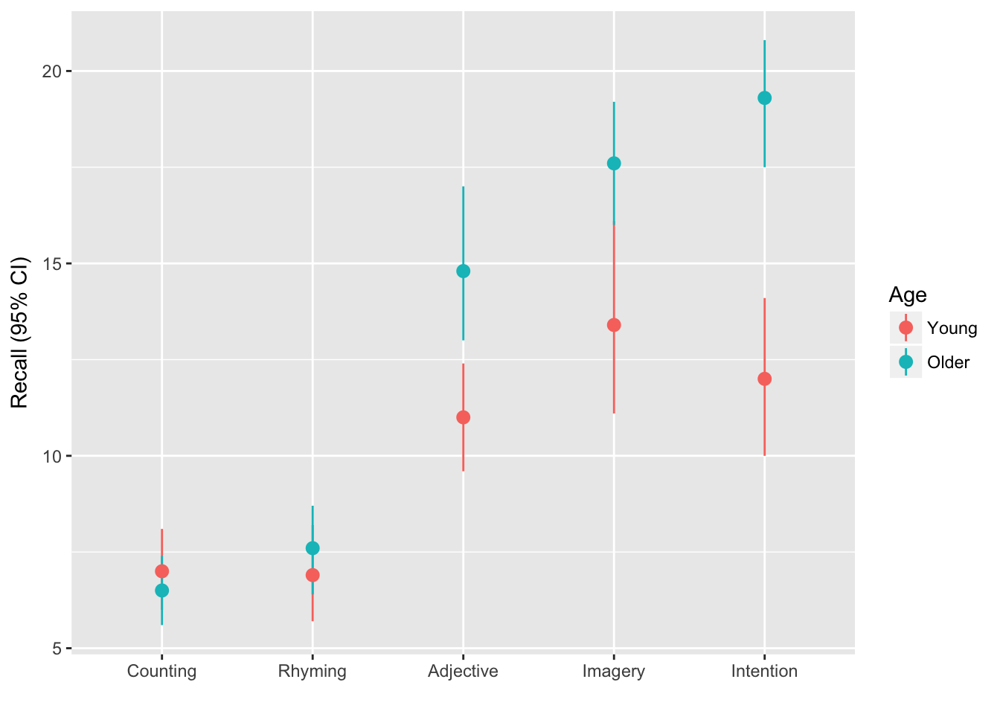
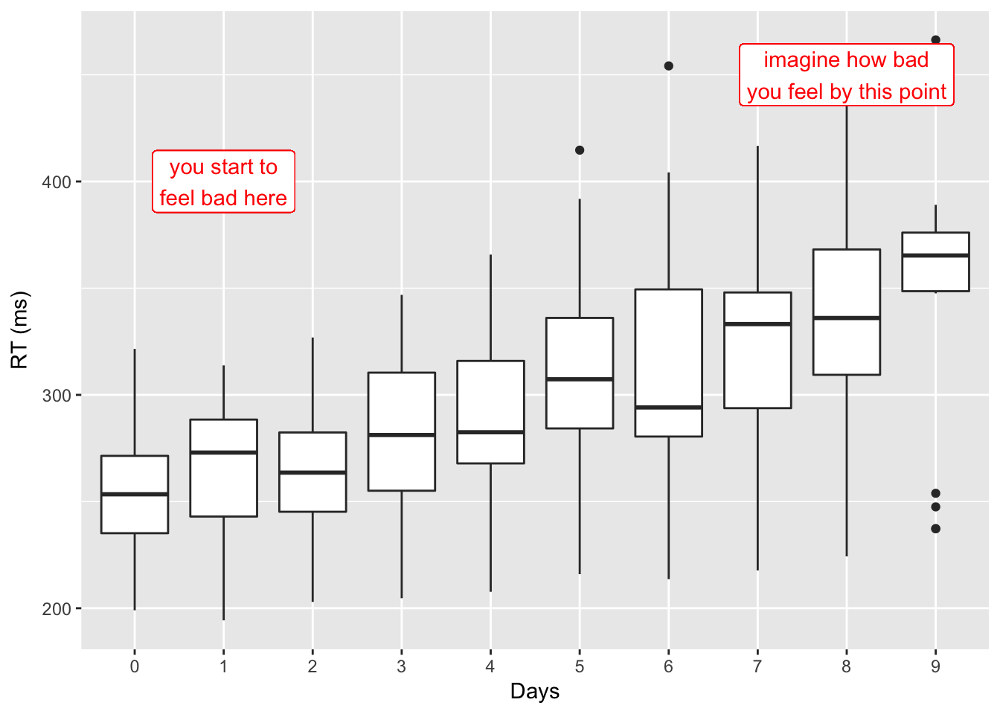

12 Anova ‘Cookbook’
This section is intended as a shortcut to running Anova for a variety of common types of model. If you want to understand more about what you are doing, read the section on principles of Anova in R.
12.1 Between subjects designs
12.1.1 Factorial anova, no bigger than 2x2
12.1.2 Factorial anova, where one factor has > 2 levels.
We are using a dataset from Howell (REF), chapter 13 which recorded Recall among young v.s. older adults (Age) for each of 5 conditions.
This data would commonly be plotted something like this:
eysenck <- readRDS("data/eysenck.Rdata")
eysenck %>%
ggplot(aes(Condition, Recall, group=Age, color=Age)) +
stat_summary(geom="pointrange", fun.data = mean_cl_boot) +
ylab("Recall (95% CI)") + xlab("")
Or alternatively if we wanted to provde a better summary of the distribution of the raw data we could use a boxplot:
eysenck %>%
ggplot(aes(Age, Recall)) +
geom_boxplot(width=.33) + facet_grid(~Condition) +
ylab("Recall (95% CI)") + xlab("")Figure 12.1: Boxplot for recall in older and young adults, by condition.
We can run a linear model including the effect of Age and Condition and the interaction of these variables, and calculate the Anova:
eysenck.model <- lm(Recall~Age*Condition, data=eysenck)
car::Anova(eysenck.model, type=3)
## Anova Table (Type III tests)
##
## Response: Recall
## Sum Sq Df F value Pr(>F)
## (Intercept) 490.00 1 61.0550 9.85e-12 ***
## Age 1.25 1 0.1558 0.6940313
## Condition 351.52 4 10.9500 2.80e-07 ***
## Age:Condition 190.30 4 5.9279 0.0002793 ***
## Residuals 722.30 90
## ---
## Signif. codes: 0 '***' 0.001 '**' 0.01 '*' 0.05 '.' 0.1 ' ' 1Checking assumptions
If we want to check assumptions of the model are met, these tables and plots would be a reasonable place to start. First running Levene’s test:
car::leveneTest(eysenck.model) %>%
pander()| Df | F value | Pr(>F) | |
|---|---|---|---|
| group | 9 | 1.031 | 0.4217 |
| 90 | NA | NA |
Then a QQ-plot of the model residuals to assess normality:
car::qqPlot(eysenck.model)Figure 12.2: QQ plot to assess normality of model residuals
And finally a residual-vs-fitted plot:
# we have to make a dataframe containing the fitted values and residuals first
data_frame(
fitted = predict(eysenck.model),
residual = residuals(eysenck.model)) %>%
# and then plot points and a smoothed line
ggplot(aes(fitted, residual)) +
geom_point() +
geom_smooth(se=F)
## `geom_smooth()` using method = 'loess'Figure 12.3: Residual vs fitted (spread vs. level) plot to check homogeneity of variance.
Post hoc tests
If we want to look at post-hoc pairwise tests we can use the the lsmeans() function from the lsmeans:: package:
lsmeans::lsmeans(eysenck.model, pairwise~Age:Condition)
## $lsmeans
## Age Condition lsmean SE df lower.CL upper.CL
## Young Counting 7.0 0.8958547 90 5.220228 8.779772
## Older Counting 6.5 0.8958547 90 4.720228 8.279772
## Young Rhyming 6.9 0.8958547 90 5.120228 8.679772
## Older Rhyming 7.6 0.8958547 90 5.820228 9.379772
## Young Adjective 11.0 0.8958547 90 9.220228 12.779772
## Older Adjective 14.8 0.8958547 90 13.020228 16.579772
## Young Imagery 13.4 0.8958547 90 11.620228 15.179772
## Older Imagery 17.6 0.8958547 90 15.820228 19.379772
## Young Intention 12.0 0.8958547 90 10.220228 13.779772
## Older Intention 19.3 0.8958547 90 17.520228 21.079772
##
## Confidence level used: 0.95
##
## $contrasts
## contrast estimate SE df t.ratio p.value
## Young,Counting - Older,Counting 0.5 1.26693 90 0.395 1.0000
## Young,Counting - Young,Rhyming 0.1 1.26693 90 0.079 1.0000
## Young,Counting - Older,Rhyming -0.6 1.26693 90 -0.474 1.0000
## Young,Counting - Young,Adjective -4.0 1.26693 90 -3.157 0.0633
## Young,Counting - Older,Adjective -7.8 1.26693 90 -6.157 <.0001
## Young,Counting - Young,Imagery -6.4 1.26693 90 -5.052 0.0001
## Young,Counting - Older,Imagery -10.6 1.26693 90 -8.367 <.0001
## Young,Counting - Young,Intention -5.0 1.26693 90 -3.947 0.0058
## Young,Counting - Older,Intention -12.3 1.26693 90 -9.709 <.0001
## Older,Counting - Young,Rhyming -0.4 1.26693 90 -0.316 1.0000
## Older,Counting - Older,Rhyming -1.1 1.26693 90 -0.868 0.9970
## Older,Counting - Young,Adjective -4.5 1.26693 90 -3.552 0.0205
## Older,Counting - Older,Adjective -8.3 1.26693 90 -6.551 <.0001
## Older,Counting - Young,Imagery -6.9 1.26693 90 -5.446 <.0001
## Older,Counting - Older,Imagery -11.1 1.26693 90 -8.761 <.0001
## Older,Counting - Young,Intention -5.5 1.26693 90 -4.341 0.0015
## Older,Counting - Older,Intention -12.8 1.26693 90 -10.103 <.0001
## Young,Rhyming - Older,Rhyming -0.7 1.26693 90 -0.553 0.9999
## Young,Rhyming - Young,Adjective -4.1 1.26693 90 -3.236 0.0511
## Young,Rhyming - Older,Adjective -7.9 1.26693 90 -6.236 <.0001
## Young,Rhyming - Young,Imagery -6.5 1.26693 90 -5.131 0.0001
## Young,Rhyming - Older,Imagery -10.7 1.26693 90 -8.446 <.0001
## Young,Rhyming - Young,Intention -5.1 1.26693 90 -4.025 0.0044
## Young,Rhyming - Older,Intention -12.4 1.26693 90 -9.787 <.0001
## Older,Rhyming - Young,Adjective -3.4 1.26693 90 -2.684 0.1963
## Older,Rhyming - Older,Adjective -7.2 1.26693 90 -5.683 <.0001
## Older,Rhyming - Young,Imagery -5.8 1.26693 90 -4.578 0.0006
## Older,Rhyming - Older,Imagery -10.0 1.26693 90 -7.893 <.0001
## Older,Rhyming - Young,Intention -4.4 1.26693 90 -3.473 0.0260
## Older,Rhyming - Older,Intention -11.7 1.26693 90 -9.235 <.0001
## Young,Adjective - Older,Adjective -3.8 1.26693 90 -2.999 0.0950
## Young,Adjective - Young,Imagery -2.4 1.26693 90 -1.894 0.6728
## Young,Adjective - Older,Imagery -6.6 1.26693 90 -5.209 0.0001
## Young,Adjective - Young,Intention -1.0 1.26693 90 -0.789 0.9986
## Young,Adjective - Older,Intention -8.3 1.26693 90 -6.551 <.0001
## Older,Adjective - Young,Imagery 1.4 1.26693 90 1.105 0.9830
## Older,Adjective - Older,Imagery -2.8 1.26693 90 -2.210 0.4578
## Older,Adjective - Young,Intention 2.8 1.26693 90 2.210 0.4578
## Older,Adjective - Older,Intention -4.5 1.26693 90 -3.552 0.0205
## Young,Imagery - Older,Imagery -4.2 1.26693 90 -3.315 0.0411
## Young,Imagery - Young,Intention 1.4 1.26693 90 1.105 0.9830
## Young,Imagery - Older,Intention -5.9 1.26693 90 -4.657 0.0005
## Older,Imagery - Young,Intention 5.6 1.26693 90 4.420 0.0011
## Older,Imagery - Older,Intention -1.7 1.26693 90 -1.342 0.9409
## Young,Intention - Older,Intention -7.3 1.26693 90 -5.762 <.0001
##
## P value adjustment: tukey method for comparing a family of 10 estimatesBy default Tukey correction is applied for multiple comparisons which is a reasonable default. If you want to use other methods (e.g. to use false discovery rate adjustment) you can use the adjust argument. In the code below we use the broom::tidy() function to convert the table into a dataframe, and then show only the first 6 rows as a table in RMarkdown:
# calculate pairwise contrasts
eysenck.fdr <- lsmeans::lsmeans(eysenck.model, pairwise~Age:Condition, adjust="fdr")
# show first 6 rows from this long table
eysenck.fdr$contrasts %>%
broom::tidy() %>%
head(6) %>%
pander(caption="First 6 rows of the pairwise contrasts with FDR-adjusted p values")| level1 | level2 | estimate | std.error | df | statistic | p.value |
|---|---|---|---|---|---|---|
| Young,Counting | Older,Counting | 0.5 | 1.267 | 90 | 0.3947 | 0.7263 |
| Young,Counting | Young,Rhyming | 0.1 | 1.267 | 90 | 0.07893 | 0.9373 |
| Young,Counting | Older,Rhyming | -0.6 | 1.267 | 90 | -0.4736 | 0.6824 |
| Young,Counting | Young,Adjective | -4 | 1.267 | 90 | -3.157 | 0.003251 |
| Young,Counting | Older,Adjective | -7.8 | 1.267 | 90 | -6.157 | 7.626e-08 |
| Young,Counting | Young,Imagery | -6.4 | 1.267 | 90 | -5.052 | 5.698e-06 |
You should note that the FDR adjusted p values do not represent probabilities in the normal sense. Instead, the p value now indicates the false discovery rate at which the p value should be considered statistically significant. So, for example, if the adjusted p value 0.09, then this indicates the contrast would be significant if the acceptable false discovery rate is 10% (people often set their acceptable false discover rate to be 5% out of habit, but this is not always appropriate).
# Set our acceptable false discovery rate to 10%
FDR <- .1
lsmeans::lsmeans(eysenck.model, pairwise~Age:Condition, adjust="none")$contrast %>%
broom::tidy() %>%
select(level1, level2, p.value) %>%
arrange(p.value) %>%
mutate(`q (10% FDR)` = (rank(p.value)/length(p.value))*FDR) %>%
mutate(p.fdr.adjust=p.adjust(p.value, method="BH")) %>%
mutate(significant = as.numeric(p.value < `q (10% FDR)`)) %>%
# just show some of the results, at the break between sig and ns contrast
filter(p.fdr.adjust > .01 & p.fdr.adjust < .4) %>%
pander(caption="Subset of contrasts, showing the break between significant and ns results, as determined by an FDR of 10%.", split.tables=Inf)| level1 | level2 | p.value | q (10% FDR) | p.fdr.adjust | significant |
|---|---|---|---|---|---|
| Older,Rhyming | Young,Adjective | 0.008667 | 0.07111 | 0.01219 | 1 |
| Older,Adjective | Young,Intention | 0.02964 | 0.07333 | 0.03923 | 1 |
| Older,Adjective | Older,Imagery | 0.02964 | 0.07556 | 0.03923 | 1 |
| Young,Adjective | Young,Imagery | 0.06139 | 0.07778 | 0.07893 | 1 |
| Older,Imagery | Older,Intention | 0.183 | 0.08 | 0.2288 | 0 |
| Older,Adjective | Young,Imagery | 0.2721 | 0.08222 | 0.3222 | 0 |
| Young,Imagery | Young,Intention | 0.2721 | 0.08444 | 0.3222 | 0 |
Note, that when you use adjust='fdr' then the p values returned are The Biostat Handbook has a good
12.2 Repeated measures or ‘split plot’ designs
It might be controversial to say so, but the tools to run traditional repeat measures Anova in R are a pain to use. It’s not easy to run repeated measures Anova models using base packages alone and, although there are numerous packages which do simplify this a little, their syntax can be obtuse or confusing, and the output sometimes cryptic. To make matters worse, various textbooks, online guides and the R help files themselves show many ways to achieve the same ends, and it can be difficult to follow the differences between the underlying models that are run.
At this point, given the many other advantages of linear mixed models over traditional repeated measures Anova, and given that many researchers abuse traditional Anova in practice (e.g. using it for unbalanced data, or where some data are missing), the recommendation here is to simply give up and learn how to run linear mixed models. These can (very closely) replicate traditional Anova approaches, but also:
Handle missing data or unbalanced designs gracefully and efficiently.
Be expanded to include multiple levels of nesting. For example, allowing pupils to be nested within classes, within schools. Alternatively multiple measurements of individual patients might be clustered by hospital or therapist.
Allow time to be treated as a continuous variable. For example, time can be modelled as a slope or some kind of curve, rather than a fixed set of observation-points. This can be more parsimonious, and more flexible when dealing with real-world data (e.g. from clinical trials).
It would be best at this point to jump straight to the main section multilevel or mixed-effects models, but to give one brief example of mixed models in use:
The sleepstudy dataset in the lme4 package provides reaction time data recorded from participants over a period of 10 days, during which time they were deprived of sleep.
lme4::sleepstudy %>% head(12) %>% pander| Reaction | Days | Subject |
|---|---|---|
| 249.6 | 0 | 308 |
| 258.7 | 1 | 308 |
| 250.8 | 2 | 308 |
| 321.4 | 3 | 308 |
| 356.9 | 4 | 308 |
| 414.7 | 5 | 308 |
| 382.2 | 6 | 308 |
| 290.1 | 7 | 308 |
| 430.6 | 8 | 308 |
| 466.4 | 9 | 308 |
| 222.7 | 0 | 309 |
| 205.3 | 1 | 309 |
We can plot these data to show the increase in RT as sleep deprivation continues:
lme4::sleepstudy %>%
ggplot(aes(factor(Days), Reaction)) +
geom_boxplot() +
xlab("Days") + ylab("RT (ms)") +
geom_label(aes(y=400, x=2, label="you start to\nfeel bad here"), color="red") +
geom_label(aes(y=450, x=9, label="imagine how bad\nyou feel by this point"), color="red") 
If we want to test whether there are significant differences in RTs between Days, we could fit something very similar to a traditional repeat measures Anova using the lme4::lmer() function, and obtain an Anova table for the model using the special lmerTest::anova() function:
sleep.model <- lmer(Reaction ~ factor(Days) + (1 | Subject), data=lme4::sleepstudy)
lmerTest::anova(sleep.model)
## Analysis of Variance Table of type III with Satterthwaite
## approximation for degrees of freedom
## Sum Sq Mean Sq NumDF DenDF F.value Pr(>F)
## factor(Days) 166235 18471 9 153 18.703 < 2.2e-16 ***
## ---
## Signif. codes: 0 '***' 0.001 '**' 0.01 '*' 0.05 '.' 0.1 ' ' 1If you had really wanted to fit the traditional repeated measures Anova, the closest equivalent would be:
afex::aov_car(Reaction ~ Days + Error(Subject/(Days)), data=lme4::sleepstudy)
## Anova Table (Type 3 tests)
##
## Response: Reaction
## Effect df MSE F ges p.value
## 1 Days 3.32, 56.46 2676.18 18.70 *** .29 <.0001
## ---
## Signif. codes: 0 '***' 0.001 '**' 0.01 '*' 0.05 '+' 0.1 ' ' 1
##
## Sphericity correction method: GGThis gives almost-identical results. You may find that in other cases the lmer and traditional anova models diverge slightly, but this is likely to be caused by factors including imbalances in the data, partially missing data (only complete cases can be analyses by traditional anova) or other violations of the assumptions of one or both of the models. There is no clear steer in the literature as to which model is ‘best’ in the general sense, and it is likely that the linear model will be a better fit for a greater range of datasets.
See the multilevel models section for details of more interesting models using this dataset which:
- Fit a simple slope for
Days - Fit curves or other functions for
Days - Allow the effect of sleep deprivation to vary for different participants